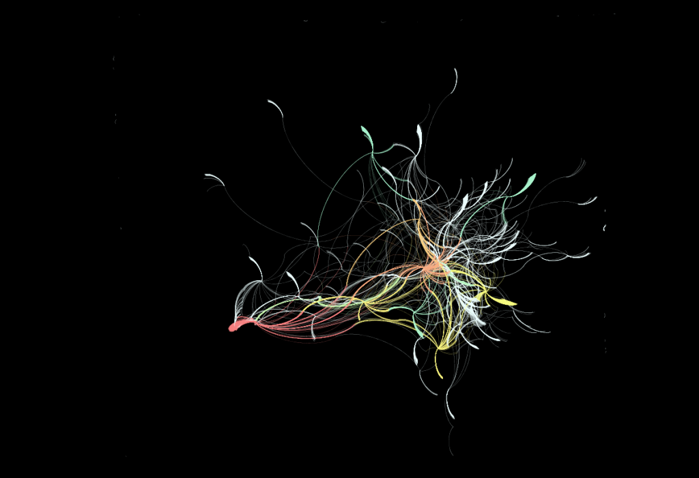
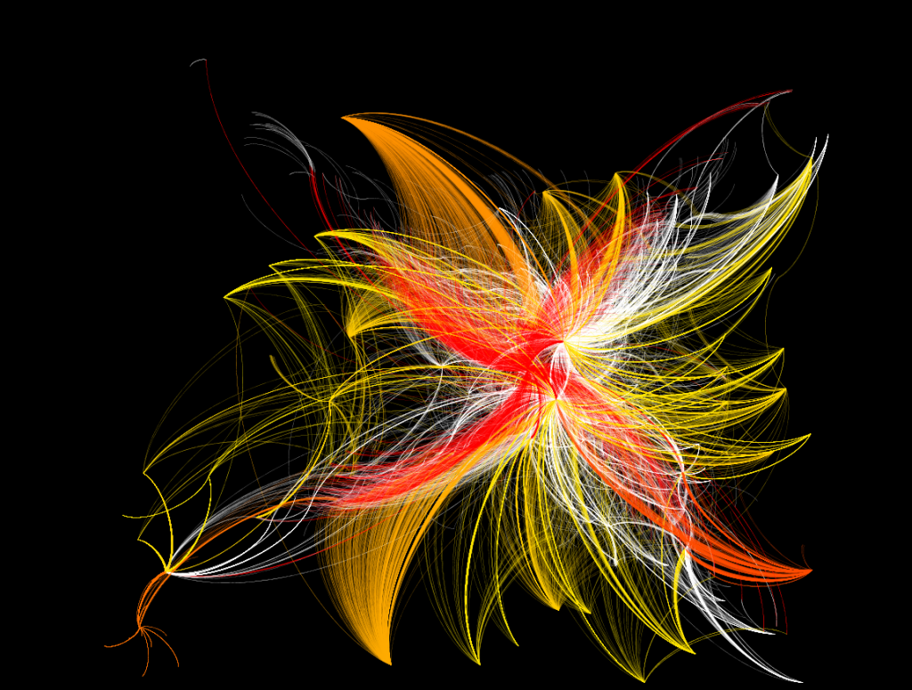

The interesting problem when dealing with such a large dataset with little depth (the data as it is collated in these examples is focused on number of connections rather than quality, as individual letters are held as connecting two people or two locations–I may reformat the data to treat these as simple connections to see if the analytics produce more interesting results) is moving beyond the seemingly cosmological representations of places and individuals and toward something more intellectually dense. Still, I think there is a place for large, almost artistic representations of individuals and places that may help scholars to better understand and explain humanities phenomena. The visualization in the last post was a combination of location and person, mediated by letters as connecting elements. Below is a visualization of the locations involved in Voltaire’s correspondence (and, I now realize, a little bleed over from the correspondences of Voltaire’s correspondents, it seems I wasn’t as focused with my query to produce this dataset, but since it’s just a visualized humanist fishing expedition, I’m not terribly concerned).



Individual names of people and letters are shown in the larger version available by clicking on the image.
Voltaire and his most popular correspondents are displayed from red to yellow, with less popular correspondents in white. Tails are only evident in correspondence that travels beyond the network parameters set during the query (a mistake, these tails shouldn’t exist at all). This was produced using a combination of the Yifan Hu algorithm and the ForceAtlas algorithm, with further effort to pull out the clustered correspondents for aesthetic purposes. The latter activity damages the ability to recognize clustering patterns but, given the purpose of this visualization (to examine the possibilities of the tool from the perspective of a digital humanities specialist rather than examining a particular humanist point of inquiry) I deemed it worthwhile.
On reflection, the availability of the dataset and the particular format of the data prior to ingest seem at least as important as the methods used to visualize and analyze said data. Further exploration of the capabilities of Gephi are going to require my restructuring the Mapping the Republic of Letters data to emphasize connectivity as well as working with the geographic network analytical functionality.